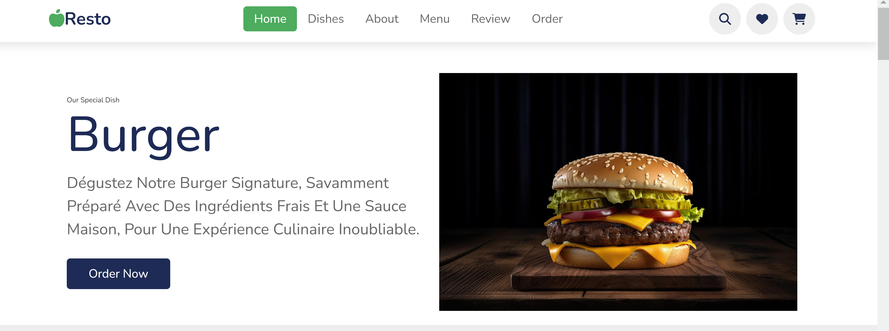
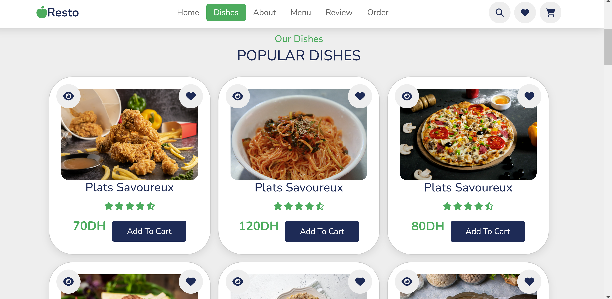
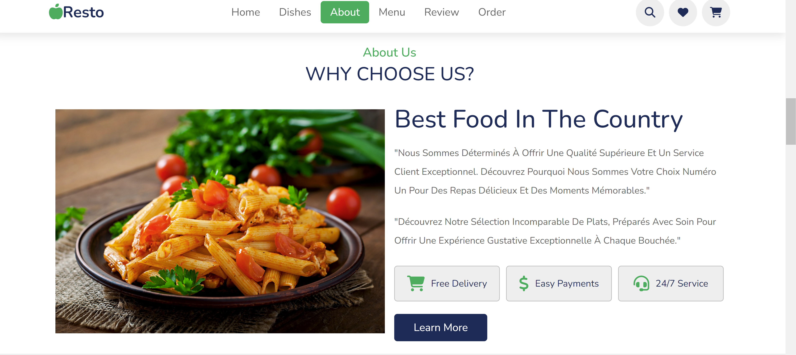
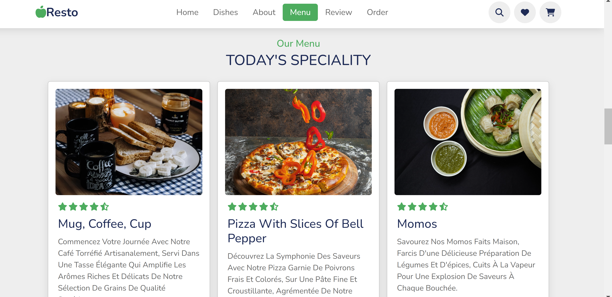
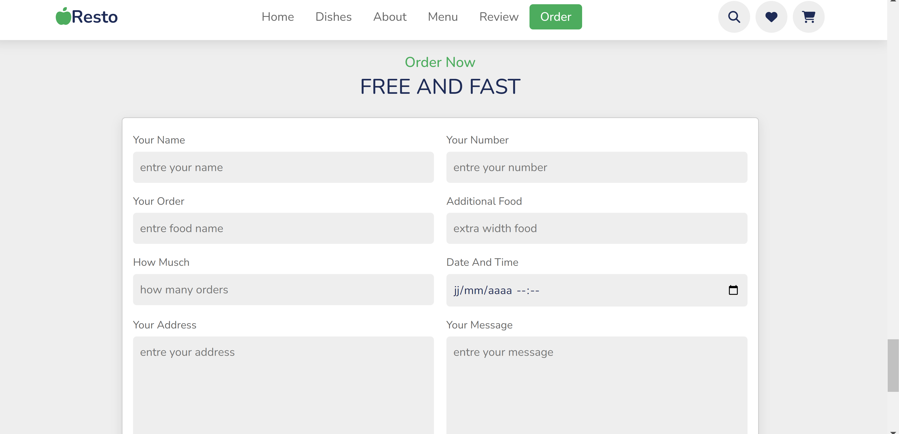
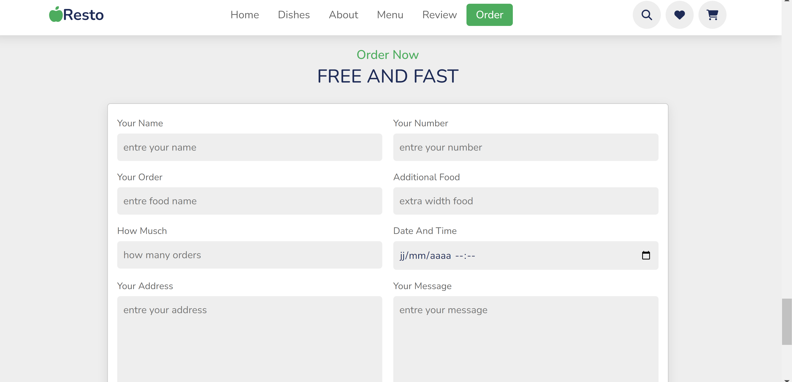
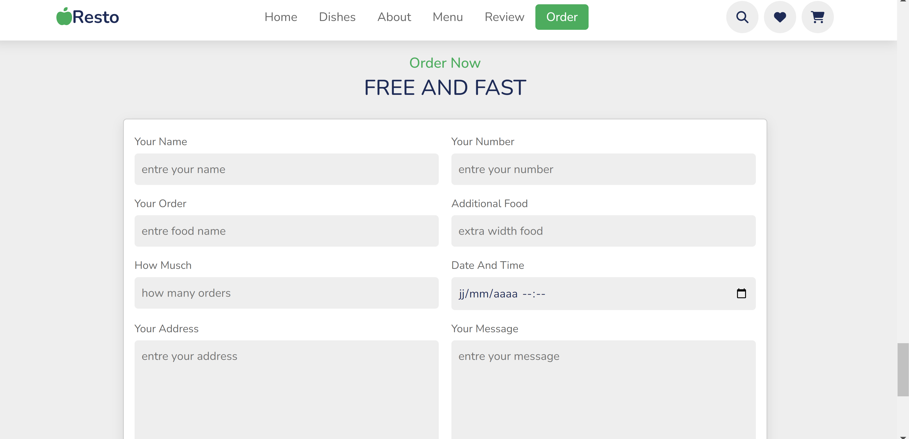

Détails du Projet
Une plateforme de gestion de restaurant est un système en ligne qui permet la gestion des réservations, des commandes, du personnel et des stocks, optimisant ainsi les opérations et améliorant l'efficacité du restaurant.
×





 


- Langages : Html, Css, JavaScript, JEE
- Frameworks : Hibernate
- Outils : VS Code et Eclipse, Apache, Postman, phpMyAdmin
Le projet a pour but de :
- Conçu et mis en œuvre une plateforme de gestion de restaurant en utilisant des technologies modernes pour optimiser les opérations.
- Développé un front-end interactif pour une expérience utilisateur fluide, permettant la gestion des réservations, des commandes et du personnel.
- Implémenté un back-end robuste pour la gestion des stocks, des données sécurisées et des fonctionnalités administratives.
- Livré une solution complète pour améliorer l'efficacité et la productivité du restaurant.